1

انتباه خطر الإقتراب من
ملتقى طرق (كروازمة) الأسبقية
للعربات القادمة من اليمين
انتباه خطر الإقتراب من
ملتقى طرق (كروازمة) الأسبقية
للعربات القادمة من اليمين
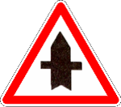
إنتباه طريق كبيرة
فصغيرة مول لكبيرة
يدوز هو الأول
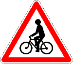
خطر مرور الدراجات
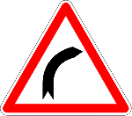
خطر منعرج على اليمين
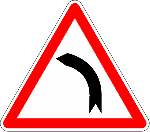
خطر منعرج على اليسار
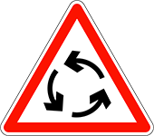
إنتباه وجود مدار (رومبوان)
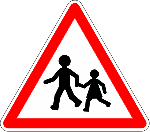
خطر مكان يكثر فيه مرور
الأطفال، أو (وجود مدرسة)
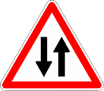
خطر السير في الاتجاهين
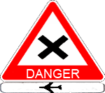
انتباه كروازمة خطر
قريبة من المطار الأسبقية
للسيارات القادمة من اليمين
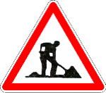
انتباه أشغال عمومية
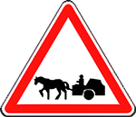
خطر مرور مركبات مجرورة
بواسطة الدَّوَاب
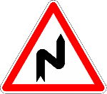
خطر منعرجات متتابعة أولها
على اليمين
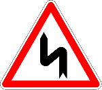
خطر منعرجات متتابعة أولها
على اليسار
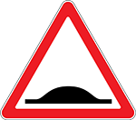
خطر مُخَفِّضْ السُّرعة
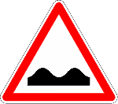
خطر حَدبَة أو حَدْبات
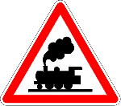
خطر تقاطع طريق مع سكة
حديدية بدون حواجز وبدون
نصف حاجز
(بدون عساس)
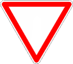
إعطاء حق الأسبقية عند ملتقى
الطرق القادم
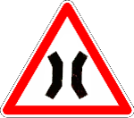
خطر طريق ضيِّقة
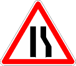
خطر طريق ضيِّقة على اليمين
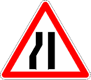
خطر طريق ضيِّقة على اليسار
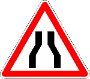
خطر طريق ضيّقة من الجهتين
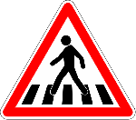
خطر ممر الراجلين
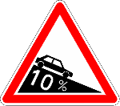
خطر مُنْحَدَر
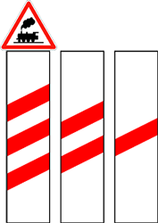
تقاطع الطّريق مع سكة حديدية بدون عساس
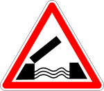
خطر قنطرة متحركة
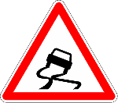
انتباه طريق منزلق
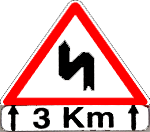
انتباه إنعراج مزدوج الأول
على اليسار والتاني على
اليمين على طول 3 كلم
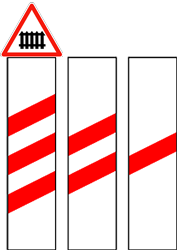
انتباه سكة القطار بالعساس
على 150 م 100 م 50 متر
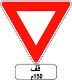
ليس لك حق الأسبقية، بعد 150 متر يوجد علامة قف
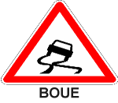
انتباه تُربة منزلقة
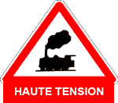
انتباه سكة القطار بدون
عساس, خطر الكهرباء
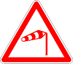
انتباه اتجاه الرياح
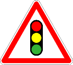
انتباه الضوء و الكروازمة
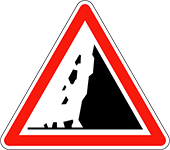
انتباه تساقط الأحجار أو وجود أحجار على الطّريق
انتباه خطر متنوع
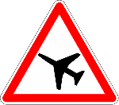
انتباه مكان نزول أو
تحليق الطائرات
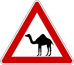
خطر مرور حيوانات أليفة
(مرور الجمال)
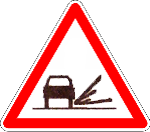
انتباه وجود حصى أو مزرار
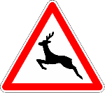
خطر مرور حيوانات متوحشة
(مرور الغزال)
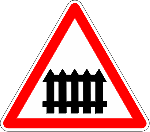
انتباه خطر تقاطع الطّريق مع سِكَّة القطار (بالعساس)
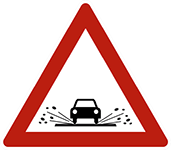
إنتباه خطر طريق بها ماء
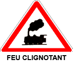
انتباه سكة القطار بدون
عساس, ادا كان الضوء شغال
أتوقف, ادا كان غير شغال أكمل
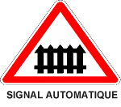
إنتباه سكة القطار
بحاجز اوتوماتيكي و بدون
عساس
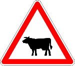
خطر مرور حيوانات أليفة
(مرور الأبقار)
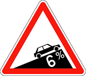
خطر عقبة ذات صعود حاد
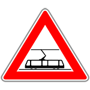
إنتباه خطر تقاطع الطريق مع ممرات الترامواي
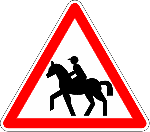
خطر مرور الفرسان (الخيل)
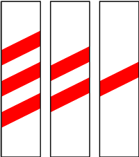
تقاطع الطّريق مع سكة حديدية